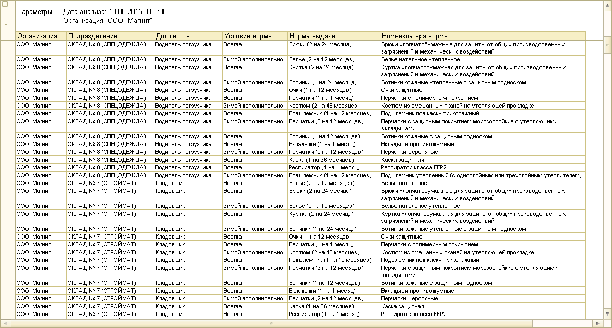
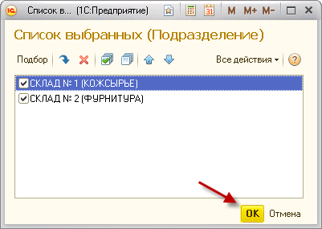
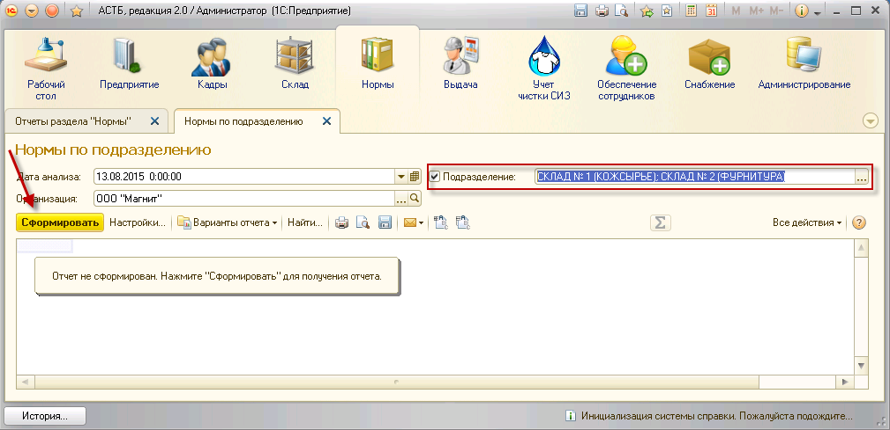
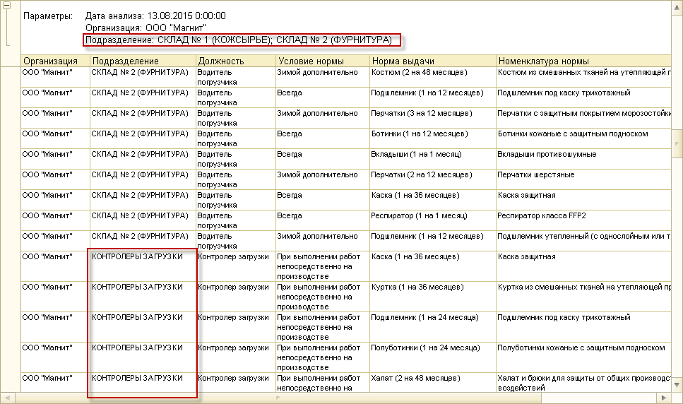
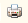

Будет сформирован отчет по всем нормам организации, отражающий состав норм для каждой должности во всех существующих подразделениях.

Чтобы сделать отбор по одному или нескольким подразделениям, установите флажок напротив данного параметра и нажмите на кнопку <...>
Откроется справочник «Подразделения». Выберите нажатием нужное подразделение и нажмите на кнопку «Выбрать». Подразделение появится в списке выбранных.
Примечание: может быть выбрано несколько подразделений.
После того, как были выбраны нужные для отчета подразделения нажмите на кнопку «ОК».

Выбранные подразделения будут проставлены в окне отчета. Затем нажмите кнопку «Сформировать».

По указанным параметрам будет сформирован отчет.

Примечание: в отчет попадут дочерние подразделения. На примере выше: для отбора было указано два подразделения – «Склад №1 (Кожсырье)», «Склад №2 (Фурнитура)» – однако в отчете указано еще одно подразделение «Контролеры загрузки», так как оно является дочерним от подразделения «Склад №2».
Чтобы распечатать сформированный отчет, нажмите кнопку  .
.